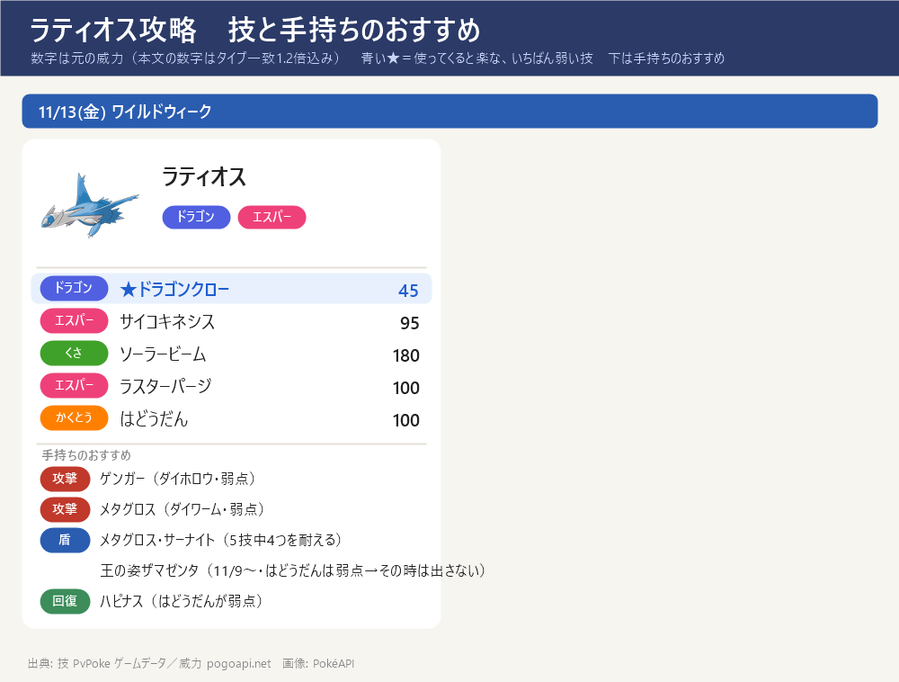
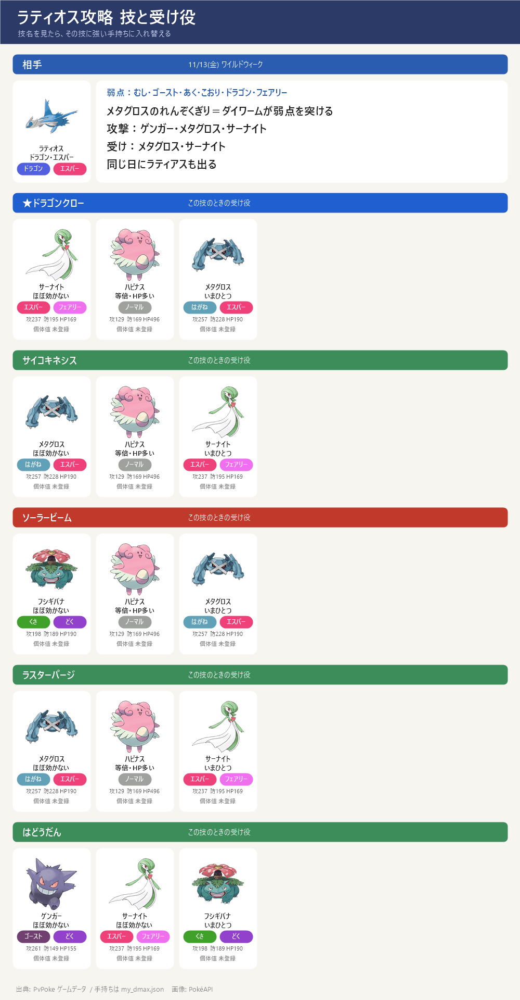

ダイマックス ラティオス 攻略（11/13 金）
ダイマックス ラティオス 攻略（11/13 金）- ワイルドウィーク 11/13(金) の★5 マックスバトル。ダイマックス ラティオス（ドラゴン・エスパー）。同じ日にラティアスも出る。18:00～19:00 はパワースポットにも出る
- 弱点：むし・ゴースト・あく・こおり・ドラゴン・フェアリー（2倍）。手持ちではゲンガー・メタグロス（れんぞくぎり→ダイワーム）・サーナイト（あまえる）の3体が弱点を突ける
- 気をつける技：ソーラービーム（180・シャワーズ・インテレオンは弱点、メタグロスは いまひとつ）、はどうだん（ハピナスは弱点）
- 11/9〜 王の姿ザマゼンタ（たてのおう・かくとう/はがね）が入る場合：受けの軸はメタグロスのまま（エスパー技をほぼ無効＋はどうだんも等倍で、いちばん安定）だが、ザマゼンタも足せる。ドラゴンクローといちばん危ないソーラービーム（180）をいまひとつで受けられるが、サイコキネシス・ラスターパージは等倍＋開始時に盾1枚。ただし はどうだん（かくとう）が弱点なので、はどうだんが全体攻撃のパターンでは前に出さない・交代する。いない場合はメタグロス・サーナイトで受ければよく、人数の目安は変わらない
- この期間に捕まえると、スペシャルアタックラスターパージを覚えている。色違いあり
技カード

スペシャルアタック候補とねらい目

- ★ ドラゴンクロー（ドラゴン）威力 54 ← ねらい目（いちばん弱い）
- サイコキネシス（エスパー）威力 114
- ソーラービーム（くさ）威力 180 ← いちばん危ない
- ラスターパージ（エスパー）威力 120
- はどうだん（かくとう）威力 100
- 技は選べない。最初の大技の名前を見て、受け役を合わせる
ボスの攻撃のルール
- 1回のバトルで使う技は2つだけ：このボスのゲージ技（ドラゴンクロー・サイコキネシス・ソーラービーム・ラスターパージ・はどうだん）から2つが抽選され、片方が『単体攻撃（スペシャル技）』・もう片方が『全体攻撃』に決まる。バトルの間はこの割り当てのまま変わらない
- 単体攻撃（スペシャル技）：ねらわれた1体の頭の上に3本線（黄色い光）が出て約1秒後に当たる。左右にスワイプで避けられる（ギリギリで避けるほど軽い：すぐ約5割減・点滅直前で約7割減）
- 全体攻撃：「○○の全体攻撃！」の予告の帯が出て場の全員に当たる。避けられない → ダイウォールを張るか、その技に強い受け役に交代する
- 見分け方：出た技が『頭上の3本線』なら単体、『○○の全体攻撃！』の帯なら全体。最初の1〜2回でどの技がどちらかが分かる。来た技名に合わせて受け役を置く → 下の『パターンの早見表』『パターン別の作戦』を見る
- 負けてもマックス粒子（MP）は減らない → 組み合わせが悪ければ気にせず入り直してよい（入り直すと組み合わせは変わることがある）
- ルールの出典：ポケモンWiki「マックスバトル」＋みんポケ「回避のしかた」で一致（実際に戦った感覚とも一致）
交代受けのコツ
- ボスの技は単体攻撃（スペシャル技）と全体攻撃の2種類で、守り方がちがう。単体は交代で受けず回避・全体だけ予告を見て交代で受ける
- 単体攻撃（スペシャル技）＝交代せずスワイプで回避：ねらわれた1体の頭の上に3本線（黄色い光）が出て約1秒後に当たる → すぐ横にスワイプして避ける。交代は間に合わないので、単体攻撃を交代で受け役に回すことはしない（先頭はそのまま避ける）
- 全体攻撃＝予告を見てから受け役に交代：バトル開始時・ボスの技の直後・ダイマックス解除時に「○○の全体攻撃！」の予告の帯が出る → 予告を見てから、その技に強い受け役に交代して受け、受けたら先頭に戻す（避けられないのでダイウォールを張ってもよい）
出陣する3体
出陣する3体：ゲンガー（攻撃）・メタグロス（受け）・サーナイト（受け）。連れて行けるのは1人3体まで。下の『パターン別の作戦』の受け1・受け2・攻撃はこの3体の中で選ぶ
ラティオスはメタグロスがエスパー技といちばん危ないソーラービームを、サーナイトがドラゴン技・はどうだんを、それぞれ強く受けられる → 全20パターンで先頭も交代先もそろう（2体とも弱点になる技がない）
攻撃は弱点（ゴースト）を突くゲンガー（ダイホロウ）が1発いちばん大きい。ゲンガーはエスパー技が弱点なのでサイコキネシス・ラスターパージのときは前に出さない。サーナイトもフェアリーで弱点を突けるので2体目の攻撃になる
パターンの早見表
どのパターンでも、まず弱点のない受け役で受けて技を確認 → 下のとおり入れ替える。評価は避けられない『全体攻撃』で決める：技の威力そのものが高い（150以上）か、相性の良い受け役でも大きく削られる（目安70以上）と『はずれ』、威力が低め（100以下）で相性の良い受け役なら軽い（目安50以下）と『当たり』、その間が『ふつう』。全技が高威力のボスでは『当たり』は出ない（単体攻撃はスワイプで避けられるので評価に入れない）
| # | 単体 3本線・避ける | 全体 予告・避けられない | 全体の 威力 | 評価 | 全体の受け役 |
|---|---|---|---|---|---|
| 1 | はどうだん | ドラゴンクロー | 54 | 当たり | サーナイト |
| 2 | サイコキネシス | ドラゴンクロー | 54 | 当たり | サーナイト |
| 3 | ラスターパージ | ドラゴンクロー | 54 | 当たり | サーナイト |
| 4 | ソーラービーム | ドラゴンクロー | 54 | 当たり | サーナイト |
| 5 | ドラゴンクロー | はどうだん | 100 | 当たり | ゲンガー |
| 6 | サイコキネシス | はどうだん | 100 | 当たり | サーナイト |
| 7 | ラスターパージ | はどうだん | 100 | 当たり | サーナイト |
| 8 | ソーラービーム | はどうだん | 100 | 当たり | ゲンガー |
| 9 | ドラゴンクロー | サイコキネシス | 114 | ふつう | メタグロス |
| 10 | ドラゴンクロー | ラスターパージ | 120 | ふつう | メタグロス |
| 11 | はどうだん | サイコキネシス | 114 | ふつう | メタグロス |
| 12 | ラスターパージ | サイコキネシス | 114 | ふつう | メタグロス |
| 13 | はどうだん | ラスターパージ | 120 | ふつう | メタグロス |
| 14 | サイコキネシス | ラスターパージ | 120 | ふつう | メタグロス |
| 15 | ソーラービーム | サイコキネシス | 114 | ふつう | メタグロス |
| 16 | ソーラービーム | ラスターパージ | 120 | ふつう | メタグロス |
| 17 | ドラゴンクロー | ソーラービーム | 180 | はずれ | フシギバナ |
| 18 | はどうだん | ソーラービーム | 180 | はずれ | フシギバナ |
| 19 | サイコキネシス | ソーラービーム | 180 | はずれ | ザマゼンタ(王) 開始時に盾1枚 |
| 20 | ラスターパージ | ソーラービーム | 180 | はずれ | ザマゼンタ(王) 開始時に盾1枚 |
数字＝全体攻撃1発の目安（威力×相性・タイプ一致1.2倍込み）。『全体の威力』は技そのものの威力。評価＝威力150以上か目安70以上→はずれ／威力100以下かつ目安50以下→当たり／その間→ふつう。手持ち・個体値・技レベルは my_dmax.json より
パターン別の作戦
受け2体＋攻撃1体が基本。各パターンで上の『出陣する3体』の中から 受け1（基本の先頭・スペシャル技をスワイプで回避しつつ受ける）／受け2（全体攻撃の予告で交代。攻撃役が全体を半減以下で受けられるなら攻撃役に交代／受け1のままでよいなら交代不要）／攻撃（ダイマックスのとき交代）を選ぶ。スペシャル技は交代で受けず回避し、全体攻撃だけ交代で受ける（当たり→ふつう→はずれ の順）
パターン1 単体=はどうだん／全体=ドラゴンクロー ［当たり］
評価：当たり — 避けられない全体攻撃が威力低めで、相性の良い受け役なら軽い組み合わせ。少人数ならこれになるまで入り直すのが定番
この組み合わせは 単体＝はどうだん（頭上に3本線・スワイプで回避）と 全体＝ドラゴンクロー（「ドラゴンクローの全体攻撃！」の予告・避けられない）。受け2体＋攻撃1体でこう動く：
受け1（基本の先頭）＝ゲンガー：スペシャル技〔はどうだん〕をほぼ効かない（1発24）で受けられる。スペシャル技は交代で受けられないので先頭に置き、3本線が出たらスワイプで回避しつつ通常技でゲージをためる
受け2（全体攻撃の予告で交代）＝サーナイト：全体攻撃〔ドラゴンクロー〕を3体でいちばん軽いほぼ効かない（1発21）で受けられる → 予告が出たら交代して受け、受けたら受け1に戻す。この受け役はダイウォールを持たないので、盾を張るなら メタグロス（ダイウォール Lv2）
攻撃（ダイマックスのとき交代）＝ゲンガー（受け1と兼任）：ゴースト技でボスの弱点を突ける（1発354）。ダイマックスがたまったら交代して弱点を突く
見分け方：最初に頭上の3本線ではどうだん、予告の帯でドラゴンクローが来たらこのパターン
パターン2 単体=サイコキネシス／全体=ドラゴンクロー ［当たり］
評価：当たり — 避けられない全体攻撃が威力低めで、相性の良い受け役なら軽い組み合わせ。少人数ならこれになるまで入り直すのが定番
この組み合わせは 単体＝サイコキネシス（頭上に3本線・スワイプで回避）と 全体＝ドラゴンクロー（「ドラゴンクローの全体攻撃！」の予告・避けられない）。受け2体＋攻撃1体でこう動く：
受け1（基本の先頭）＝メタグロス：スペシャル技〔サイコキネシス〕をほぼ効かない（1発45）で受けられる。スペシャル技は交代で受けられないので先頭に置き、3本線が出たらスワイプで回避しつつ通常技でゲージをためる
受け2（全体攻撃の予告で交代）＝サーナイト：全体攻撃〔ドラゴンクロー〕を3体でいちばん軽いほぼ効かない（1発21）で受けられる → 予告が出たら交代して受け、受けたら受け1に戻す。この受け役はダイウォールを持たないので、盾を張るなら メタグロス（ダイウォール Lv2）
攻撃（ダイマックスのとき交代）＝ゲンガー：ゴースト技でボスの弱点を突ける（1発354）。ダイマックスがたまったら交代して弱点を突く。ただし単体〔サイコキネシス〕が弱点なので、サイコキネシスに狙われたら攻撃だけしてスワイプで回避
見分け方：最初に頭上の3本線でサイコキネシス、予告の帯でドラゴンクローが来たらこのパターン
パターン3 単体=ラスターパージ／全体=ドラゴンクロー ［当たり］
評価：当たり — 避けられない全体攻撃が威力低めで、相性の良い受け役なら軽い組み合わせ。少人数ならこれになるまで入り直すのが定番
この組み合わせは 単体＝ラスターパージ（頭上に3本線・スワイプで回避）と 全体＝ドラゴンクロー（「ドラゴンクローの全体攻撃！」の予告・避けられない）。受け2体＋攻撃1体でこう動く：
受け1（基本の先頭）＝メタグロス：スペシャル技〔ラスターパージ〕をほぼ効かない（1発47）で受けられる。スペシャル技は交代で受けられないので先頭に置き、3本線が出たらスワイプで回避しつつ通常技でゲージをためる
受け2（全体攻撃の予告で交代）＝サーナイト：全体攻撃〔ドラゴンクロー〕を3体でいちばん軽いほぼ効かない（1発21）で受けられる → 予告が出たら交代して受け、受けたら受け1に戻す。この受け役はダイウォールを持たないので、盾を張るなら メタグロス（ダイウォール Lv2）
攻撃（ダイマックスのとき交代）＝ゲンガー：ゴースト技でボスの弱点を突ける（1発354）。ダイマックスがたまったら交代して弱点を突く。ただし単体〔ラスターパージ〕が弱点なので、ラスターパージに狙われたら攻撃だけしてスワイプで回避
見分け方：最初に頭上の3本線でラスターパージ、予告の帯でドラゴンクローが来たらこのパターン
パターン4 単体=ソーラービーム／全体=ドラゴンクロー ［当たり］
評価：当たり — 避けられない全体攻撃が威力低めで、相性の良い受け役なら軽い組み合わせ。少人数ならこれになるまで入り直すのが定番
この組み合わせは 単体＝ソーラービーム（頭上に3本線・スワイプで回避）と 全体＝ドラゴンクロー（「ドラゴンクローの全体攻撃！」の予告・避けられない）。受け2体＋攻撃1体でこう動く：
受け1（基本の先頭）＝ゲンガー：スペシャル技〔ソーラービーム〕をいまひとつ（1発112）で受けられる。スペシャル技は交代で受けられないので先頭に置き、3本線が出たらスワイプで回避しつつ通常技でゲージをためる
受け2（全体攻撃の予告で交代）＝サーナイト：全体攻撃〔ドラゴンクロー〕を3体でいちばん軽いほぼ効かない（1発21）で受けられる → 予告が出たら交代して受け、受けたら受け1に戻す。この受け役はダイウォールを持たないので、盾を張るなら メタグロス（ダイウォール Lv2）
攻撃（ダイマックスのとき交代）＝ゲンガー（受け1と兼任）：ゴースト技でボスの弱点を突ける（1発354）。ダイマックスがたまったら交代して弱点を突く
見分け方：最初に頭上の3本線でソーラービーム、予告の帯でドラゴンクローが来たらこのパターン
パターン5 単体=ドラゴンクロー／全体=はどうだん ［当たり］
評価：当たり — 避けられない全体攻撃が威力低めで、相性の良い受け役なら軽い組み合わせ。少人数ならこれになるまで入り直すのが定番
この組み合わせは 単体＝ドラゴンクロー（頭上に3本線・スワイプで回避）と 全体＝はどうだん（「はどうだんの全体攻撃！」の予告・避けられない）。受け2体＋攻撃1体でこう動く：
受け1（基本の先頭）＝サーナイト：スペシャル技〔ドラゴンクロー〕をほぼ効かない（1発21）で受けられる。スペシャル技は交代で受けられないので先頭に置き、3本線が出たらスワイプで回避しつつ通常技でゲージをためる
受け2（全体攻撃の予告で交代）＝攻撃役〔ゲンガー〕に交代：攻撃役が全体攻撃〔はどうだん〕をほぼ効かない（1発24）で受けられる → 全体攻撃の予告が出たら攻撃役に交代して受け、受けたら受け1に戻す
攻撃（ダイマックスのとき交代）＝ゲンガー：ゴースト技でボスの弱点を突ける（1発354）。ダイマックスがたまったら交代して弱点を突く
見分け方：最初に頭上の3本線でドラゴンクロー、予告の帯ではどうだんが来たらこのパターン
パターン6 単体=サイコキネシス／全体=はどうだん ［当たり］
評価：当たり — 避けられない全体攻撃が威力低めで、相性の良い受け役なら軽い組み合わせ。少人数ならこれになるまで入り直すのが定番
この組み合わせは 単体＝サイコキネシス（頭上に3本線・スワイプで回避）と 全体＝はどうだん（「はどうだんの全体攻撃！」の予告・避けられない）。受け2体＋攻撃1体でこう動く：
受け1（基本の先頭）＝メタグロス：スペシャル技〔サイコキネシス〕をほぼ効かない（1発45）で受けられる。スペシャル技は交代で受けられないので先頭に置き、3本線が出たらスワイプで回避しつつ通常技でゲージをためる
受け2（全体攻撃の予告で交代）＝攻撃役〔ゲンガー〕に交代：攻撃役が全体攻撃〔はどうだん〕をほぼ効かない（1発24）で受けられる → 全体攻撃の予告が出たら攻撃役に交代して受け、受けたら受け1に戻す
攻撃（ダイマックスのとき交代）＝ゲンガー：ゴースト技でボスの弱点を突ける（1発354）。ダイマックスがたまったら交代して弱点を突く。ただし単体〔サイコキネシス〕が弱点なので、サイコキネシスに狙われたら攻撃だけしてスワイプで回避
見分け方：最初に頭上の3本線でサイコキネシス、予告の帯ではどうだんが来たらこのパターン
パターン7 単体=ラスターパージ／全体=はどうだん ［当たり］
評価：当たり — 避けられない全体攻撃が威力低めで、相性の良い受け役なら軽い組み合わせ。少人数ならこれになるまで入り直すのが定番
この組み合わせは 単体＝ラスターパージ（頭上に3本線・スワイプで回避）と 全体＝はどうだん（「はどうだんの全体攻撃！」の予告・避けられない）。受け2体＋攻撃1体でこう動く：
受け1（基本の先頭）＝メタグロス：スペシャル技〔ラスターパージ〕をほぼ効かない（1発47）で受けられる。スペシャル技は交代で受けられないので先頭に置き、3本線が出たらスワイプで回避しつつ通常技でゲージをためる
受け2（全体攻撃の予告で交代）＝攻撃役〔ゲンガー〕に交代：攻撃役が全体攻撃〔はどうだん〕をほぼ効かない（1発24）で受けられる → 全体攻撃の予告が出たら攻撃役に交代して受け、受けたら受け1に戻す
攻撃（ダイマックスのとき交代）＝ゲンガー：ゴースト技でボスの弱点を突ける（1発354）。ダイマックスがたまったら交代して弱点を突く。ただし単体〔ラスターパージ〕が弱点なので、ラスターパージに狙われたら攻撃だけしてスワイプで回避
見分け方：最初に頭上の3本線でラスターパージ、予告の帯ではどうだんが来たらこのパターン
パターン8 単体=ソーラービーム／全体=はどうだん ［当たり］
評価：当たり — 避けられない全体攻撃が威力低めで、相性の良い受け役なら軽い組み合わせ。少人数ならこれになるまで入り直すのが定番
この組み合わせは 単体＝ソーラービーム（頭上に3本線・スワイプで回避）と 全体＝はどうだん（「はどうだんの全体攻撃！」の予告・避けられない）。受け2体＋攻撃1体でこう動く：
受け1（基本の先頭）＝ゲンガー：スペシャル技〔ソーラービーム〕をいまひとつ（1発112）で受けられる。スペシャル技は交代で受けられないので先頭に置き、3本線が出たらスワイプで回避しつつ通常技でゲージをためる
受け2（全体攻撃の予告で交代）＝交代不要（受け1のままでよい）：受け1が全体攻撃〔はどうだん〕もほぼ効かないで受けられるので、交代せずそのまま受けてよい（不安ならダイウォールで固める）
攻撃（ダイマックスのとき交代）＝ゲンガー（受け1と兼任）：ゴースト技でボスの弱点を突ける（1発354）。ダイマックスがたまったら交代して弱点を突く
見分け方：最初に頭上の3本線でソーラービーム、予告の帯ではどうだんが来たらこのパターン
パターン9 単体=ドラゴンクロー／全体=サイコキネシス ［ふつう］
評価：ふつう — 受け役を合わせれば対応できる組み合わせ。ただし全体攻撃はそれなりに重いので、盾・交代をサボらない
この組み合わせは 単体＝ドラゴンクロー（頭上に3本線・スワイプで回避）と 全体＝サイコキネシス（「サイコキネシスの全体攻撃！」の予告・避けられない）。受け2体＋攻撃1体でこう動く：
受け1（基本の先頭）＝サーナイト：スペシャル技〔ドラゴンクロー〕をほぼ効かない（1発21）で受けられる。スペシャル技は交代で受けられないので先頭に置き、3本線が出たらスワイプで回避しつつ通常技でゲージをためる
受け2（全体攻撃の予告で交代）＝メタグロス：全体攻撃〔サイコキネシス〕を3体でいちばん軽いほぼ効かない（1発45）で受けられる → 予告が出たら交代して受け、受けたら受け1に戻す。この受け役はダイウォールも張れる
攻撃（ダイマックスのとき交代）＝ゲンガー：ゴースト技でボスの弱点を突ける（1発354）。ダイマックスがたまったら交代して弱点を突く。全体〔サイコキネシス〕が弱点なので、サイコキネシスが全体のときは前に出さない
見分け方：最初に頭上の3本線でドラゴンクロー、予告の帯でサイコキネシスが来たらこのパターン
パターン10 単体=ドラゴンクロー／全体=ラスターパージ ［ふつう］
評価：ふつう — 受け役を合わせれば対応できる組み合わせ。ただし全体攻撃はそれなりに重いので、盾・交代をサボらない
この組み合わせは 単体＝ドラゴンクロー（頭上に3本線・スワイプで回避）と 全体＝ラスターパージ（「ラスターパージの全体攻撃！」の予告・避けられない）。受け2体＋攻撃1体でこう動く：
受け1（基本の先頭）＝サーナイト：スペシャル技〔ドラゴンクロー〕をほぼ効かない（1発21）で受けられる。スペシャル技は交代で受けられないので先頭に置き、3本線が出たらスワイプで回避しつつ通常技でゲージをためる
受け2（全体攻撃の予告で交代）＝メタグロス：全体攻撃〔ラスターパージ〕を3体でいちばん軽いほぼ効かない（1発47）で受けられる → 予告が出たら交代して受け、受けたら受け1に戻す。この受け役はダイウォールも張れる
攻撃（ダイマックスのとき交代）＝ゲンガー：ゴースト技でボスの弱点を突ける（1発354）。ダイマックスがたまったら交代して弱点を突く。全体〔ラスターパージ〕が弱点なので、ラスターパージが全体のときは前に出さない
見分け方：最初に頭上の3本線でドラゴンクロー、予告の帯でラスターパージが来たらこのパターン
パターン11 単体=はどうだん／全体=サイコキネシス ［ふつう］
評価：ふつう — 受け役を合わせれば対応できる組み合わせ。ただし全体攻撃はそれなりに重いので、盾・交代をサボらない
この組み合わせは 単体＝はどうだん（頭上に3本線・スワイプで回避）と 全体＝サイコキネシス（「サイコキネシスの全体攻撃！」の予告・避けられない）。受け2体＋攻撃1体でこう動く：
受け1（基本の先頭）＝ゲンガー：スペシャル技〔はどうだん〕をほぼ効かない（1発24）で受けられる。スペシャル技は交代で受けられないので先頭に置き、3本線が出たらスワイプで回避しつつ通常技でゲージをためる
受け2（全体攻撃の予告で交代）＝メタグロス：全体攻撃〔サイコキネシス〕を3体でいちばん軽いほぼ効かない（1発45）で受けられる → 予告が出たら交代して受け、受けたら受け1に戻す。この受け役はダイウォールも張れる
攻撃（ダイマックスのとき交代）＝ゲンガー（受け1と兼任）：ゴースト技でボスの弱点を突ける（1発354）。ダイマックスがたまったら交代して弱点を突く。全体〔サイコキネシス〕が弱点なので、サイコキネシスが全体のときは前に出さない
見分け方：最初に頭上の3本線ではどうだん、予告の帯でサイコキネシスが来たらこのパターン
パターン12 単体=ラスターパージ／全体=サイコキネシス ［ふつう］
評価：ふつう — 受け役を合わせれば対応できる組み合わせ。ただし全体攻撃はそれなりに重いので、盾・交代をサボらない
この組み合わせは 単体＝ラスターパージ（頭上に3本線・スワイプで回避）と 全体＝サイコキネシス（「サイコキネシスの全体攻撃！」の予告・避けられない）。受け2体＋攻撃1体でこう動く：
受け1（基本の先頭）＝メタグロス：スペシャル技〔ラスターパージ〕をほぼ効かない（1発47）で受けられる。スペシャル技は交代で受けられないので先頭に置き、3本線が出たらスワイプで回避しつつ通常技でゲージをためる
受け2（全体攻撃の予告で交代）＝交代不要（受け1のままでよい）：受け1が全体攻撃〔サイコキネシス〕もほぼ効かないで受けられるので、交代せずそのまま受けてよい（不安ならダイウォールで固める）
攻撃（ダイマックスのとき交代）＝ゲンガー：ゴースト技でボスの弱点を突ける（1発354）。ダイマックスがたまったら交代して弱点を突く。ただし単体〔ラスターパージ〕が弱点なので、ラスターパージに狙われたら攻撃だけしてスワイプで回避。全体〔サイコキネシス〕が弱点なので、サイコキネシスが全体のときは前に出さない
見分け方：最初に頭上の3本線でラスターパージ、予告の帯でサイコキネシスが来たらこのパターン
パターン13 単体=はどうだん／全体=ラスターパージ ［ふつう］
評価：ふつう — 受け役を合わせれば対応できる組み合わせ。ただし全体攻撃はそれなりに重いので、盾・交代をサボらない
この組み合わせは 単体＝はどうだん（頭上に3本線・スワイプで回避）と 全体＝ラスターパージ（「ラスターパージの全体攻撃！」の予告・避けられない）。受け2体＋攻撃1体でこう動く：
受け1（基本の先頭）＝ゲンガー：スペシャル技〔はどうだん〕をほぼ効かない（1発24）で受けられる。スペシャル技は交代で受けられないので先頭に置き、3本線が出たらスワイプで回避しつつ通常技でゲージをためる
受け2（全体攻撃の予告で交代）＝メタグロス：全体攻撃〔ラスターパージ〕を3体でいちばん軽いほぼ効かない（1発47）で受けられる → 予告が出たら交代して受け、受けたら受け1に戻す。この受け役はダイウォールも張れる
攻撃（ダイマックスのとき交代）＝ゲンガー（受け1と兼任）：ゴースト技でボスの弱点を突ける（1発354）。ダイマックスがたまったら交代して弱点を突く。全体〔ラスターパージ〕が弱点なので、ラスターパージが全体のときは前に出さない
見分け方：最初に頭上の3本線ではどうだん、予告の帯でラスターパージが来たらこのパターン
パターン14 単体=サイコキネシス／全体=ラスターパージ ［ふつう］
評価：ふつう — 受け役を合わせれば対応できる組み合わせ。ただし全体攻撃はそれなりに重いので、盾・交代をサボらない
この組み合わせは 単体＝サイコキネシス（頭上に3本線・スワイプで回避）と 全体＝ラスターパージ（「ラスターパージの全体攻撃！」の予告・避けられない）。受け2体＋攻撃1体でこう動く：
受け1（基本の先頭）＝メタグロス：スペシャル技〔サイコキネシス〕をほぼ効かない（1発45）で受けられる。スペシャル技は交代で受けられないので先頭に置き、3本線が出たらスワイプで回避しつつ通常技でゲージをためる
受け2（全体攻撃の予告で交代）＝交代不要（受け1のままでよい）：受け1が全体攻撃〔ラスターパージ〕もほぼ効かないで受けられるので、交代せずそのまま受けてよい（不安ならダイウォールで固める）
攻撃（ダイマックスのとき交代）＝ゲンガー：ゴースト技でボスの弱点を突ける（1発354）。ダイマックスがたまったら交代して弱点を突く。ただし単体〔サイコキネシス〕が弱点なので、サイコキネシスに狙われたら攻撃だけしてスワイプで回避。全体〔ラスターパージ〕が弱点なので、ラスターパージが全体のときは前に出さない
見分け方：最初に頭上の3本線でサイコキネシス、予告の帯でラスターパージが来たらこのパターン
パターン15 単体=ソーラービーム／全体=サイコキネシス ［ふつう］
評価：ふつう — 受け役を合わせれば対応できる組み合わせ。ただし全体攻撃はそれなりに重いので、盾・交代をサボらない
この組み合わせは 単体＝ソーラービーム（頭上に3本線・スワイプで回避）と 全体＝サイコキネシス（「サイコキネシスの全体攻撃！」の予告・避けられない）。受け2体＋攻撃1体でこう動く：
受け1（基本の先頭）＝ゲンガー：スペシャル技〔ソーラービーム〕をいまひとつ（1発112）で受けられる。スペシャル技は交代で受けられないので先頭に置き、3本線が出たらスワイプで回避しつつ通常技でゲージをためる
受け2（全体攻撃の予告で交代）＝メタグロス：全体攻撃〔サイコキネシス〕を3体でいちばん軽いほぼ効かない（1発45）で受けられる → 予告が出たら交代して受け、受けたら受け1に戻す。この受け役はダイウォールも張れる
攻撃（ダイマックスのとき交代）＝ゲンガー（受け1と兼任）：ゴースト技でボスの弱点を突ける（1発354）。ダイマックスがたまったら交代して弱点を突く。全体〔サイコキネシス〕が弱点なので、サイコキネシスが全体のときは前に出さない
見分け方：最初に頭上の3本線でソーラービーム、予告の帯でサイコキネシスが来たらこのパターン
パターン16 単体=ソーラービーム／全体=ラスターパージ ［ふつう］
評価：ふつう — 受け役を合わせれば対応できる組み合わせ。ただし全体攻撃はそれなりに重いので、盾・交代をサボらない
この組み合わせは 単体＝ソーラービーム（頭上に3本線・スワイプで回避）と 全体＝ラスターパージ（「ラスターパージの全体攻撃！」の予告・避けられない）。受け2体＋攻撃1体でこう動く：
受け1（基本の先頭）＝ゲンガー：スペシャル技〔ソーラービーム〕をいまひとつ（1発112）で受けられる。スペシャル技は交代で受けられないので先頭に置き、3本線が出たらスワイプで回避しつつ通常技でゲージをためる
受け2（全体攻撃の予告で交代）＝メタグロス：全体攻撃〔ラスターパージ〕を3体でいちばん軽いほぼ効かない（1発47）で受けられる → 予告が出たら交代して受け、受けたら受け1に戻す。この受け役はダイウォールも張れる
攻撃（ダイマックスのとき交代）＝ゲンガー（受け1と兼任）：ゴースト技でボスの弱点を突ける（1発354）。ダイマックスがたまったら交代して弱点を突く。全体〔ラスターパージ〕が弱点なので、ラスターパージが全体のときは前に出さない
見分け方：最初に頭上の3本線でソーラービーム、予告の帯でラスターパージが来たらこのパターン
パターン17 単体=ドラゴンクロー／全体=ソーラービーム ［はずれ］
評価：はずれ — 避けられない全体攻撃の威力が高い組み合わせ。入り直して別の組み合わせを狙うのがおすすめ
この組み合わせは 単体＝ドラゴンクロー（頭上に3本線・スワイプで回避）と 全体＝ソーラービーム（「ソーラービームの全体攻撃！」の予告・避けられない）。受け2体＋攻撃1体でこう動く：
受け1（基本の先頭）＝サーナイト：スペシャル技〔ドラゴンクロー〕をほぼ効かない（1発21）で受けられる。スペシャル技は交代で受けられないので先頭に置き、3本線が出たらスワイプで回避しつつ通常技でゲージをためる
受け2（全体攻撃の予告で交代）＝攻撃役〔ゲンガー〕に交代：攻撃役が全体攻撃〔ソーラービーム〕をいまひとつ（1発112）で受けられる → 全体攻撃の予告が出たら攻撃役に交代して受け、受けたら受け1に戻す
攻撃（ダイマックスのとき交代）＝ゲンガー：ゴースト技でボスの弱点を突ける（1発354）。ダイマックスがたまったら交代して弱点を突く
見分け方：最初に頭上の3本線でドラゴンクロー、予告の帯でソーラービームが来たらこのパターン。全体攻撃の威力が高いので、入り直して別の組み合わせを狙うのも手
パターン18 単体=はどうだん／全体=ソーラービーム ［はずれ］
評価：はずれ — 避けられない全体攻撃の威力が高い組み合わせ。入り直して別の組み合わせを狙うのがおすすめ
この組み合わせは 単体＝はどうだん（頭上に3本線・スワイプで回避）と 全体＝ソーラービーム（「ソーラービームの全体攻撃！」の予告・避けられない）。受け2体＋攻撃1体でこう動く：
受け1（基本の先頭）＝ゲンガー：スペシャル技〔はどうだん〕をほぼ効かない（1発24）で受けられる。スペシャル技は交代で受けられないので先頭に置き、3本線が出たらスワイプで回避しつつ通常技でゲージをためる
受け2（全体攻撃の予告で交代）＝交代不要（受け1のままでよい）：受け1が全体攻撃〔ソーラービーム〕もいまひとつで受けられるので、交代せずそのまま受けてよい（不安ならダイウォールで固める）
攻撃（ダイマックスのとき交代）＝ゲンガー（受け1と兼任）：ゴースト技でボスの弱点を突ける（1発354）。ダイマックスがたまったら交代して弱点を突く
見分け方：最初に頭上の3本線ではどうだん、予告の帯でソーラービームが来たらこのパターン。全体攻撃の威力が高いので、入り直して別の組み合わせを狙うのも手
パターン19 単体=サイコキネシス／全体=ソーラービーム ［はずれ］
評価：はずれ — 避けられない全体攻撃の威力が高い組み合わせ。入り直して別の組み合わせを狙うのがおすすめ
この組み合わせは 単体＝サイコキネシス（頭上に3本線・スワイプで回避）と 全体＝ソーラービーム（「ソーラービームの全体攻撃！」の予告・避けられない）。受け2体＋攻撃1体でこう動く：
受け1（基本の先頭）＝メタグロス：スペシャル技〔サイコキネシス〕をほぼ効かない（1発45）で受けられる。スペシャル技は交代で受けられないので先頭に置き、3本線が出たらスワイプで回避しつつ通常技でゲージをためる
受け2（全体攻撃の予告で交代）＝交代不要（受け1のままでよい）：受け1が全体攻撃〔ソーラービーム〕もいまひとつで受けられるので、交代せずそのまま受けてよい（不安ならダイウォールで固める）
攻撃（ダイマックスのとき交代）＝ゲンガー：ゴースト技でボスの弱点を突ける（1発354）。ダイマックスがたまったら交代して弱点を突く。ただし単体〔サイコキネシス〕が弱点なので、サイコキネシスに狙われたら攻撃だけしてスワイプで回避
見分け方：最初に頭上の3本線でサイコキネシス、予告の帯でソーラービームが来たらこのパターン。全体攻撃の威力が高いので、入り直して別の組み合わせを狙うのも手
パターン20 単体=ラスターパージ／全体=ソーラービーム ［はずれ］
評価：はずれ — 避けられない全体攻撃の威力が高い組み合わせ。入り直して別の組み合わせを狙うのがおすすめ
この組み合わせは 単体＝ラスターパージ（頭上に3本線・スワイプで回避）と 全体＝ソーラービーム（「ソーラービームの全体攻撃！」の予告・避けられない）。受け2体＋攻撃1体でこう動く：
受け1（基本の先頭）＝メタグロス：スペシャル技〔ラスターパージ〕をほぼ効かない（1発47）で受けられる。スペシャル技は交代で受けられないので先頭に置き、3本線が出たらスワイプで回避しつつ通常技でゲージをためる
受け2（全体攻撃の予告で交代）＝交代不要（受け1のままでよい）：受け1が全体攻撃〔ソーラービーム〕もいまひとつで受けられるので、交代せずそのまま受けてよい（不安ならダイウォールで固める）
攻撃（ダイマックスのとき交代）＝ゲンガー：ゴースト技でボスの弱点を突ける（1発354）。ダイマックスがたまったら交代して弱点を突く。ただし単体〔ラスターパージ〕が弱点なので、ラスターパージに狙われたら攻撃だけしてスワイプで回避
見分け方：最初に頭上の3本線でラスターパージ、予告の帯でソーラービームが来たらこのパターン。全体攻撃の威力が高いので、入り直して別の組み合わせを狙うのも手
手持ちが受けるダメージ
- ハピナス：ドラゴンクロー 54 ／ サイコキネシス 114 ／ ソーラービーム 180 ／ ラスターパージ 120 ／ はどうだん 160（弱点）
- メタグロス：ドラゴンクロー 34（いまひとつ） ／ サイコキネシス 45（ほぼ効かない） ／ ソーラービーム 112（いまひとつ） ／ ラスターパージ 47（ほぼ効かない） ／ はどうだん 100
- ザマゼンタ(王)（王の姿・11/9〜 加入予定）：ドラゴンクロー 34（いまひとつ） ／ サイコキネシス 114 ／ ソーラービーム 112（いまひとつ） ／ ラスターパージ 120 ／ はどうだん 160（弱点）
- サーナイト：ドラゴンクロー 21（ほぼ効かない） ／ サイコキネシス 71（いまひとつ） ／ ソーラービーム 180 ／ ラスターパージ 75（いまひとつ） ／ はどうだん 39（ほぼ効かない）
- シャワーズ：ドラゴンクロー 54 ／ サイコキネシス 114 ／ ソーラービーム 288（弱点） ／ ラスターパージ 120 ／ はどうだん 100
- フシギバナ：ドラゴンクロー 54 ／ サイコキネシス 182（弱点） ／ ソーラービーム 70（ほぼ効かない） ／ ラスターパージ 192（弱点） ／ はどうだん 62（いまひとつ）
- エースバーン：ドラゴンクロー 54 ／ サイコキネシス 114 ／ ソーラービーム 112（いまひとつ） ／ ラスターパージ 120 ／ はどうだん 100
- ドリュウズ：ドラゴンクロー 34（いまひとつ） ／ サイコキネシス 71（いまひとつ） ／ ソーラービーム 180 ／ ラスターパージ 75（いまひとつ） ／ はどうだん 160（弱点）
- ドサイドン：ドラゴンクロー 54 ／ サイコキネシス 114 ／ ソーラービーム 461（弱点） ／ ラスターパージ 120 ／ はどうだん 160（弱点）
- カイリキー：ドラゴンクロー 54 ／ サイコキネシス 182（弱点） ／ ソーラービーム 180 ／ ラスターパージ 192（弱点） ／ はどうだん 100
- ゲンガー：ドラゴンクロー 54 ／ サイコキネシス 182（弱点） ／ ソーラービーム 112（いまひとつ） ／ ラスターパージ 192（弱点） ／ はどうだん 24（ほぼ効かない）
- インテレオン：ドラゴンクロー 54 ／ サイコキネシス 114 ／ ソーラービーム 288（弱点） ／ ラスターパージ 120 ／ はどうだん 100
- 数字＝技の威力 × 相性（ボスと同じタイプの技は1.2倍）。並びは受けやすい順（防御とHPも計算に入れた）
攻撃役の1発ダメージ
- 前提：相手の防御の補正 0.85（ディアルガ・パルキアのページと同じ）。個体値15/15/15として CP からレベルを逆算。ボスのHPはどのサイトにも未掲載なので、何回で倒せるかは出していない → 手持ち同士の比べ合い用
- 1発のダメージ（今の技レベル → Lv3 にしたとき）
- ● ゲンガー（ダイホロウ・弱点）：1発 354（Lv3 済み）
- ● サーナイト（ダイフェアリー・弱点）：1発 241 ／ Lv3：281
- ● メタグロス（ダイワーム・弱点）：1発 211 ／ Lv3：295
- ドサイドン（ダイアース・等倍）：1発 170 ／ Lv3：198
- ドリュウズ（ダイアース・等倍）：1発 125 ／ Lv3：175
- ハピナス（ダイアタック・等倍）：1発 88 ／ Lv3：123
並びと動き方
- メタグロス：エスパー技はほぼ効かない、ドラゴン技もいまひとつ。しかも攻撃は弱点を突ける → 最後まで残す軸
- 王の姿ザマゼンタ（たてのおう・かくとう/はがね・11/9〜加入予定）：ドラゴンクローといちばん危ないソーラービーム（180）をいまひとつで受けられるが、サイコキネシス・ラスターパージは等倍＋開始時に盾を1枚持つ → その技の受けに足せる。はどうだんが弱点なので、はどうだんが全体のときは前に出さず、受けはメタグロス／サーナイトに任せる
- サーナイト：ドラゴン技・はどうだんはほぼ効かない、エスパー技もいまひとつ → 受け役の2番手（あまえるなので攻撃も弱点）
- ゲンガー：攻撃は強いが、エスパー技が弱点 → 技名がサイコキネシス・ラスターパージなら攻撃のときだけ出す
- ハピナス：はどうだんが弱点（160）。それ以外は等倍で HP が多いので回復役
- 出さない：フシギバナ（エスパー技が弱点）、エースバーン（攻撃がいまひとつ）
戦い方のコツ
- 出陣させる3体：ゲンガー・メタグロス・サーナイト（ゲンガー＝攻撃・ダイホロウ／メタグロス＝受け・エスパー技に強い／サーナイト＝受け・ドラゴン/はどうだんに強い・2体目攻撃）。マックスバトルに連れて行けるのは1人3体まで。下の入れ替えはこの3体の中で行う
- 最初の受け役はメタグロス：ボスの技（狙い撃ち・全体攻撃）は1回使われるまで分からない（ほかの人に当たっても技名は出る）→ 技名が分かるまではメタグロスで受ける（エスパー技をほぼ無効で受けられ、弱点になる技がない）。分かったら下のとおり入れ替える
- ドラゴンクローなら → 盾をサーナイトに替える（ほぼ効かない）。攻撃はゲンガー・サーナイトでいく
- サイコキネシスなら → 盾はそのままメタグロス（ほぼ効かない）。攻撃はサーナイト・メタグロスでいく（ゲンガーは「サイコキネシス」が弱点なので、ダイマックス以外は下げておく）
- ソーラービームなら → 盾はそのままメタグロス（いまひとつ）。攻撃はゲンガー・サーナイトでいく
- ラスターパージなら → 盾はそのままメタグロス（ほぼ効かない）。攻撃はサーナイト・メタグロスでいく（ゲンガーは「ラスターパージ」が弱点なので、ダイマックス以外は下げておく）
- はどうだんなら → 盾をゲンガーに替える（ほぼ効かない）。攻撃はゲンガー・サーナイトでいく
- 野良では抜けずに受け役を入れ替える：ボスの技（狙い撃ち1つ＋全体攻撃1つ）は挑戦ごとに抽選されるが、途中で抜けると残りの3人が不利になる → 技名を見て、その技に強い手持ちに替える。入り直し（MP は勝ったときだけ減る）は知り合いと組んで、全員で決めたときだけ
- タンクは通常技だけ連打：スペシャル技よりメーターが早くたまる。0.5秒の通常技（ハピナスのはたく・メタグロスのれんぞくぎり）が向く
- エネルギーはスワイプで取る（タップではない）。アイコン1個でメーター +10%
- ダイマックス中は「盾 → 回復 → 攻撃」の順で決める：まずダイウォール（3回まで重ねがけ）、HPが減っていればダイリカバリー、それ以外はダイ攻撃
- ダイリカバリーは同じ4人グループの「場に出ている」4体だけ回復。控えのポケモンは回復しない
- 回復量は使ったポケモンの最大HPが基準：Lv1 8%・Lv2 12%・Lv3 16% を4体に同じ量 → ハピナス（HP397）で Lv1 は 31、Lv2 は 47。Lv2 に上げるのが先
- 勝負は約5分：開始 約4分30秒で「暴走寸前」と出て、約5分～5分30秒で暴走する（伝説★5はボスの攻撃が約3倍、★3は約9倍）。暴走後はすぐ全滅しやすい → 「暴走寸前」が出たら盾・回復はやめてダイ攻撃だけ。ダイマックスは出し惜しみしない（9db・Bulbapedia。決まった時間切れは無く、英語の Bulbapedia だけ約8分で打ち切りと書く）
- 倒れても応援：応援1回で仲間のメーター +20%。速く押しすぎると数えられないので、少し間をあけて押す
- 一度に戦えるのは4人まで。★5 はひとりでは無理 → 18:00～19:00 のパワースポットやキャンプファイアで人を集める
MP（マックス粒子）とディアルガ戦との兼ね合い
- 1戦 800MP（負けたら減らない）。1日に集められるのはふだん800
- 注意：ディアルガ戦（11/14）の計画では、11/12・13 は MP を使わずにためて1,500にする日。ここで★5 と戦うと 11/14 に戦える数が1回減る（3戦 → 2戦）
- → どれか1体にしぼるなら、11/11(水) レジスチル（このあと2日でためなおせる）がいちばん影響が小さい
出典: イベント: ポケらく post164755・攻略大百科 archives/120451 ／ タイプ・技・威力: PvPoke ゲームデータ・PokéAPI(pogoapi) ／ 戦い方: ディアルガ攻略ページと同じ（ポケらく・ゲームウィズ・ドクターポケゴーゴー・公式ヘルプ）／ 手持ち: my_dmax.json ／ 全体: 「ワイルドウィーク2026」ページ
画像: PokéAPI ／ 更新 2026-10-26